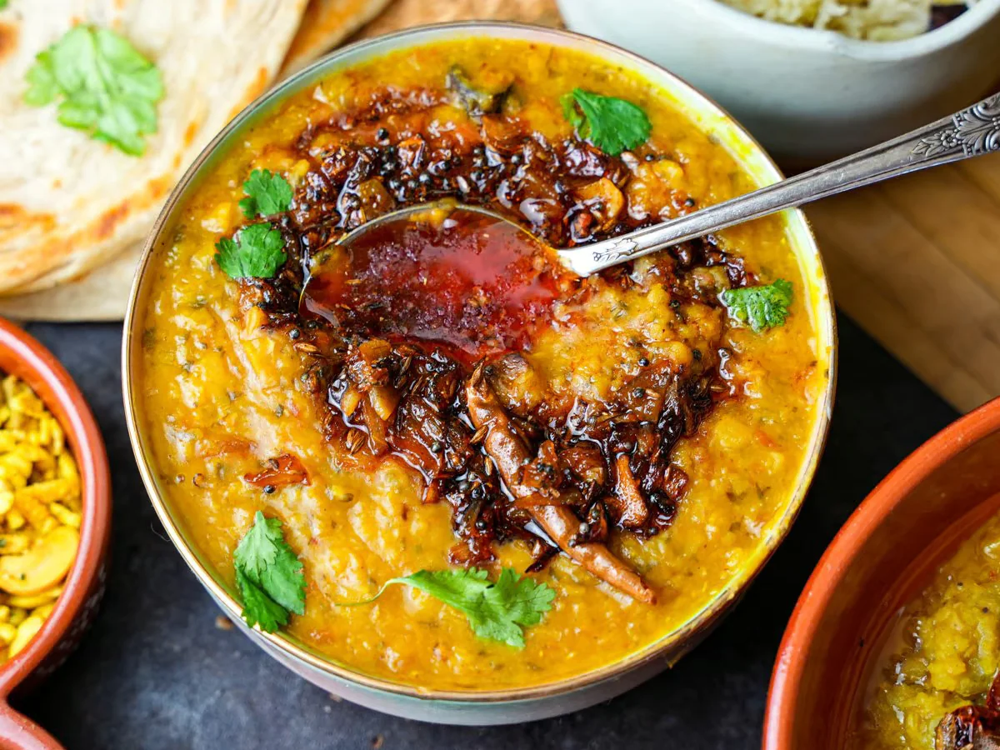

Yellow Daal Tadka Recipe
by chef Rajit

This is an easy and rewarding recipe for a spicy and flavorful Indian dish of lentil stew! Serve on its own or with basmati rice.
Ingredients:
- ½ cup dry yellow lentils
- ¼ cup dry red lentils
- ¼ cup split mung beans
- 5 cups water
- 1 ¼ teaspoons salt
- 1 teaspoon ground turmeric
- 4 teaspoons ghee (clarified butter), divided
- 1 teaspoon cumin seeds
- 1 medium onion, thinly sliced
- 2 green chile peppers, chopped
- 2 teaspoons grated fresh ginger
- 2 tablespoons chopped fresh cilantro
- ½ teaspoon cayenne pepper
- 1 tablespoon lemon juice
Recipe Steps:
- Rinse the yellow lentils, red lentils, and mung beans and put them in a medium saucepan with 5 cups water, salt, turmeric, and 1 teaspoon ghee. Bring to a boil. Reduce heat and simmer until lentils are easily mashed, about 30 minutes.
- Heat remaining ghee in a frying pan over medium heat. Add cumin seeds and cook until they sputter. Add onion, chile peppers, and ginger;stir-fry until onions are soft, 5 to 7 minutes. Remove from heat and add cilantro and cayenne. Transfer mixture to lentils.
- Let mixture simmer for 3 minutes. Remove from heat and stir in lemon juice.
Go Back